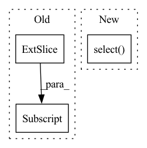

Pattern ID :3790
Before Change
// loop over the rows we want to orthogonalize
for row_no_to_ortho in to_orthogonalize:
current_row = matrix[row_no_to_ortho, :]
sum = torch.zeros(current_row.shape, dtype=matrix.dtype)
for done_row_no in done:
done_row = matrix[done_row_no, :]
non_orthogonal = torch.sum(current_row*done_row)After Change
// loop over the rows we want to orthogonalize
for row_no_to_ortho in to_orthogonalize:
current_row = matrix.select( 0, row_no_to_ortho) // matrix[row_no_to_ortho, :]
sum = torch.zeros(current_row.shape, dtype=matrix.dtype)
for done_row_no in done:
done_row = matrix.select(0, done_row_no) // matrix[done_row_no, :]In pattern: SUPERPATTERN
Frequency: 3
Non-data size: 3
Instances Fragment ID: 14140422
Project Name: v0lta/pytorch-wavelet-toolbox
Commit Name: 89baeaa089b3c418dd5635b6a37ef2d1f7dcd445
Time: 2021-09-24
Author: moritz.wolter@scai.fraunhofer.de
File Name: src/ptwt/matmul_transform.py
M Class Name: AnonimousClass
N Class Name: AnonimousClass
M Method Name: orth_via_gram_schmidt(2)
N Method Name: orth_via_gram_schmidt(2)
M Parent Class:
N Parent Class:
M File Name: src/ptwt/matmul_transform.py
N File Name: src/ptwt/matmul_transform.py
M Start Line: 93
M End Line: 97
N Start Line: 93
N End Line: 97
Before Change
// pylint:disable = protected-access
for index, op in enumerate(tensor_quantizer._cppOp):
quantized_tensors.append(op.quantizeDequantize(tensor[index, :] , tensor_quantizer._encoding[index],
round_mode, tensor.is_cuda))
quantized_tensor = torch.stack(tuple(quantized_tensors))
return quantized_tensorAfter Change
// pylint:disable = protected-access
for index, op in enumerate(tensor_quantizer._cppOp):
tensor_slice = tensor.select( tensor_quantizer._ch_axis, index)
quantized_tensors.append(op.quantizeDequantize(tensor_slice, tensor_quantizer._encoding[index],
round_mode, tensor.is_cuda))
quantized_tensor = torch.stack(tuple(quantized_tensors), dim=tensor_quantizer._ch_axis)
return quantized_tensor Fragment ID: 14140420
Project Name: quic/aimet
Commit Name: dc3723f8fbe6a6c068eaa6bbe5dfc0565eddcc4c
Time: 2021-10-26
Author: quic_akhobare@quicinc.com
File Name: TrainingExtensions/torch/src/python/aimet_torch/tensor_quantizer.py
M Class Name: QuantizeDequantize
N Class Name: QuantizeDequantize
M Method Name: _per_channel_quantize_dequantize(3)
N Method Name: _per_channel_quantize_dequantize(3)
M Parent Class: torch.autograd.Function
N Parent Class: torch.autograd.Function
M File Name: TrainingExtensions/torch/src/python/aimet_torch/tensor_quantizer.py
N File Name: TrainingExtensions/torch/src/python/aimet_torch/tensor_quantizer.py
M Start Line: 348
M End Line: 349
N Start Line: 351
N End Line: 353
Before Change
done = []
for current_row in range(row_count):
non_zero_elements = torch.sum(
(matrix[current_row, :] != 0).type(torch.float32))
if non_zero_elements < filt_len:
to_orthogonalize.append(current_row)
// else:After Change
done = []
for current_row in range(row_count):
non_zero_elements = torch.sum(
(matrix.select( 0, current_row) != 0).type(torch.float32))
// non_zero_elements = len(matrix.select(0, current_row).coalesce().values())
if non_zero_elements < filt_len:
to_orthogonalize.append(current_row) Fragment ID: 14140417
Project Name: v0lta/pytorch-wavelet-toolbox
Commit Name: 94dc77d350abcc67679d2c4197a1781007ebf59e
Time: 2021-09-24
Author: moritz.wolter@scai.fraunhofer.de
File Name: src/ptwt/matmul_transform.py
M Class Name: AnonimousClass
N Class Name: AnonimousClass
M Method Name: orth_via_gram_schmidt(2)
N Method Name: orth_via_gram_schmidt(2)
M Parent Class:
N Parent Class:
M File Name: src/ptwt/matmul_transform.py
N File Name: src/ptwt/matmul_transform.py
M Start Line: 83
M End Line: 85
N Start Line: 83
N End Line: 85